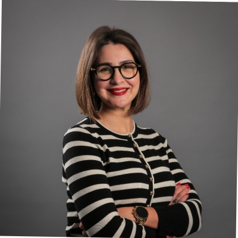

Dr. Mohamed Wiem Mkaouer
Associate Professor, Graduate Program Director of Artificial Intelligence and Software Engineering, University of Michigan-Flint
Website

Dr. Mariem Zhioua
VERMEG Tunisia
Website